|
Indeks: |
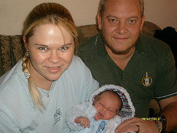
Twee BK117 B1 polisiehelikopters met lede van die polisie se Nasionale Intervensie-eenheid het hulle op 23 Julie 2010 na 'n winkelsentrum in Witbank gehaas, nadat hulle berig ontvang het dat rowers 'n vrou gyselaar hou in 'n rooftog by die Shoprite winkel. In een van die helipkopters was b1.c8.d6.e5. f5.g1.h1. Sers Jacobus Henning (28) *9-4-1982 saam met vier ander lede van die Nasionale Intervensie-eenheid, die vlieënier en 'n bemanningslid.
Die helikopter het op pad vanaf Pretoria, digby die Klarinet plakkerskamp, sewe kilometers vanaf Witbank neergestort. Ooggetuies het beweer dat die helikopter in die lug ontplof en toe neergestort het. Al sewe insittendes van die helikopter het in die ongeluk omgekom. Die vlieënier was die baie ervare en gedekoreerde Kapt Wikus Zaayman (31), wat as 'n Lugmag vlieënier met die vloede in Mosambiek bekendheid verwerf het vir sy dapper dade. Sy bemanningslid, Adjudant-Offisier (AO) Thinus Gouws (39). Die lede van die Intervensie-eenheid: Kol TP Maduna (39), AO C Davids (37), AO DC van Aswegen (35), Sers D De Bruin (31) en Sers Jacobus Henning (28).
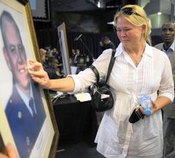
'n Ondersoekspan van die SA Polisie, die SA Lugmag en Eurocopter, die vervaardiger sal probeer om die redes vir die ongeluk vas te stel. Jacobus laat sy vrou Marlize (gebore De Witt) en 'n babaseuntjie, Johann, wat slegs sewe weke oud en op 7 Junie 2010 gebore is, agter. Marlize is self 'n Adjudant-Offisier in die Polisie. Na die ongeluk, het sy, ten spyte van haar eie verdriet, probeer om die naasbestaandes van die ander slagoffers morele ondersteuning te bied.
'n Segsman van die Polisie het aangedui dat die lede van die Nasionale Intervensie-eenheid beter opleiding as gewone polisielede ontvang om medium tot hoë risiko sake waar spesiale vaardighede vereis word, te hanteer.

Soos in die vorige Nuusbrief berig is, het die bestuur van die Familiebond besluit om 'n bydrae te lewer vir die Konsentrasiekamp monument wat by die Vrouemonument in Bloemfontein beoog word. Hierdie monument word opgerig om die Bethulie konsentrasiekamp gedenkteken te vervang, wat erg vervalle begin raak het, weens die feit dat die regering nie sy verpligtinge vir die instandhouding van Afrikaner monumente nakom nie.
Ons steun graag hierdie poging weens die groot getal Henning vrouens en kinders wat in alle konsentrasiekampe, en in besonder die Bethulie kamp, gesterf het. Ons het ons lede ook uitgenooi om hierdie verdienstelike saak te ondersteun. Slegs vier lede het egter gereageer, maar ons kon darem R1300.00 by die bedrag van R2000.00 voeg wat die familiebond bewillig het.
Ons haal graag aan uit die bedankingsbrief wat ons van die Oorlogsmuseum ontvang het:
Namens die museum, baie, baie dankie vir die skenking WAT BAIE TYDIG IS. Die sandsteenbekleding van die monument, wat nou byna 70 persent voltooi is, vind tans plaas. Dit lyk werklik mooi en ek stuur eersdaags fotos. Ek vertrou dat u ook die konferensie gaan bywoon in September 2010.
Ons sal die geld aanwend vir die maak van 'n replika engelbeeld (afgietsel) vir die monument. Die beeld is in 2003 uit die Bethulie konsentrasiekamp gesteel (gelukkig teruggevind) en die oorspronklike is nou by ons. Die afgietsel in porselein gaan deel vorm van die monument. Ons sal ook op die groot gedenksteen erkenning gee aan die Henning Familiebond se bydrae.
Die Gedenkplaat by die monument sal die volgende bewoording hê, waar daar ook erkenning aan die Henning Familiebond se bydrae gegee word.
TER HERINNERING AAN DIE ONTSTAAN VAN KONSENTRASIEKAMPE 110 JAAR GELEDE, 1900
ONTHUL: 22 SEPTEMBER 2010
Die Bethulie-konsentrasiekamp as versinnebeelding van lyding in 'n konsentrasiekamp.
Die Bethulie-konsentrasiekamp is op 22 April 1901 opgerig. Die "Helkamp" soos generaal Christiaan de Wet na die kamp verwys het, is een van die kampe met die hoogste sterftesyfers per capita. W.A. Coetzer het in sy olieverf triptiek, Bethulie uitgesonder as voorbeeld van die lyding van vroue en kinders in konsentrasiekampe tydens die Anglo-Boereoorlog van 1899- 1902.
Die lewe in konsentrasiekampe was 'n volgehoue stryd teen die dood. "Twaalf begrafnisse in die oggend en sewe in die middag in die Bethulie-kamp… dit was genoeg om die hartste hart te breek. Vir enige minute moes ek dikwels eensaam ween voor ek kon preek", (Dagboek van ds. H.J.C. Becker). In Bethulie het die vroue en kinders geliefdes se grafte met sandsteen klippies bedek wat hulle met die hand uit die naby-geleë spruit se walle gebreek het.
Met die bou van die Gariepdam het die moontlikheid bestaan dat die konsentrasiekampkerkhof oorspoel sou word. Die kerkhof is na 'n nuwe terrein verskuif en op 10 Oktober 1966 ingewy. Die sandsteen grafbekleding is egter nie na die nuwe terrein verskuif nie. In 2007 het die Bethulie gemeenskap van die klippies aan die museum geskenk wat in dié monument geïnkorporeer is. Saam hiermee is ook 'n engelbeeld van marmer geskenk wat in 2003 uit die Bethulie konsentrasiekamp gesteel is en waarvan 'n replika deel vorm van die monument. Die beeld was deel van die moeder-en kind beeld wat in 1924 deur die Helpmekaarbeweging opgerig is.
Die gedagte om mossies op die kleinste munt aan te bring, het in die Anglo-Boereoorlog (1899 - 1902) in 'n konsentrasiekamp op Bethulie onstaan. 'n Groep vroue het Matt. 10:29 as oorlewingsleuse gekies "Is twee mossies nie vir 'n sent te koop nie? En tog sal nie een van hulle op die grond val sonder die wil van julle Vader nie." Die vroue het onderneem om 'n versoek te rig om die mossies, hul simbool van hoop en geloof, op Suid-Afrika se kleinste munt te laat uit beeld. Mev. Tibbie Steyn het haar hiervoor beywer en die twee mossies (Passer melanurus) is met die hulp van genl. Jan Smuts, in 1923, op Suid-Afrika se kwartpennie geplaas.
Ondersteuning tot die projek
Appelregters
CUBE argitekte
Oranje Meisieskool
Henning Familiebond
Bethulie gemeenskap
Bloemfontein Kultuurvereniging
Vriende van die Oorlogsmuseum
Op 22 en 23 September 2010 het die Oorlogsmuseum van die Boererepublieke 'n konferensie in Bloemfontein gehou oor die bewaring van Konsentrasiekampterreine en - begraafplase. Die Konsentrasiekampmonument is ook ingehuldig. 'n Uitnodiging is aan die Henning Familiebond gerig om die konferensie en inhuldiging by te woon. Ongelukkig het ons Voorsitter, Gideon Henning ander verpligtinge oor hierdie tyd gehad en weens Bondsekretaris Olivier Henning se gesondheidstoestand kon hy nie die lang pad Bloemfontein toe aandurf nie. Jan Andries Henning van Bloemfontein het hierna ingestem om die familiebond by die konferensie te verteenwoordig.
| 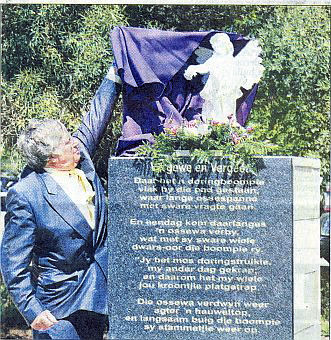 | 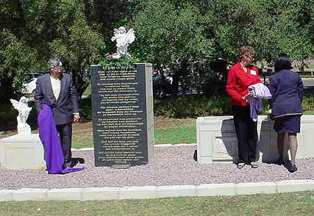 |

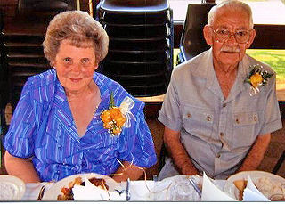
In die vorige nuusbrief het ons berig oor die dood van Eric Michael Naudé *11-7-1928 die eggenote van b7.c2.d4.e6.f1.g1. Ellen Elizabeth Naudé (gebore Henning) op 16 April 2010. Ons het nou berig ontvang dat Ellen self op 23 Julie 2010 in die ouderdom van 80 jaar en nege maande oorlede is - slegs drie maande na Eric.

Mary-Ann Henning (gebore Nel) *28-5-1963, vrou van b7.c8.d8.e1.f2.g2. Stanley Henning *20-10-1961 neem vir baie jare reeds aan pad- en veldwedlope deel. Sy het al 'n paar honderd medaljes verower. Verlede jaar het sy die Comrades Marathon aangedurf, maar weens 'n besering nie klaar-gemaak nie. Hierdie jaar het sy en haar broer die wedloop weer aangedurf en hierdie jaar sukses behaal.
| 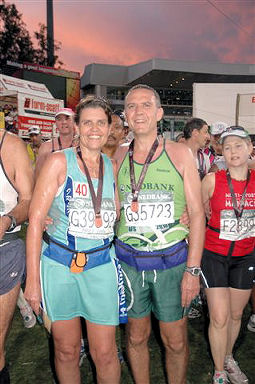 | 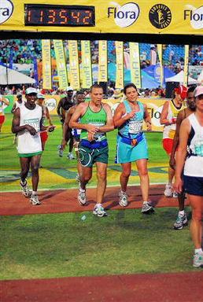 |

Ds Bjarne Fowels (70) is 'n lid van die Familiebond weens die feit dat hy 'n agterkleinseun van b7.c8.d1. Martha Johanna Elizabeth Henning (getroud Zurich) *26-8-1857 is. Sy ouma (dogter van Martha) het met 'n Noorweegse skeepskaptein getrou en saam met hom na Noorweë geëmigreer. Bjarne is dus 'n Noorweegse burger wat vir baie jare 'n kapelaan in die Noorweegse Weermag was. Bjarne is baie trots op sy Henning en Suid-Afrikaanse afkoms. Hy is 13 tale magtig, onder andere Afrikaans.
| 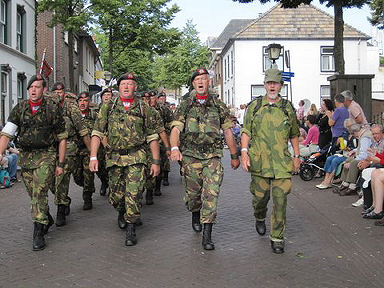 | 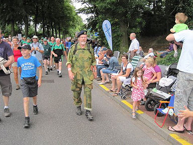 |
Bjarne het as 'n Noorweegse soldaat al verskeie kere aan die Nijmegen Vierdaagse Mars deelge-neem. Hierdie jaar het hy op 70-jarige leeftyd saam met sy seun, Brynjar, 'n geneesheer, maar ook soldaat deelgeneem.
Nijmegen in Nederland hou elke jaar 'n Internasionale afstandsmars oor vier dae waaraan deelnemers van oor die hele wêreld deelneem. Hierdie jaar is die mars die 94 ste keer gehou tussen 20 en 23 Julie 2010. Elke dag moet 'n afstand van ongeveer 30, 40 (militêre afstand) of 50 kilometers afgelê word - dus 'n totaal van 126, 161 of 199 kilometers vir die vier dae.
| 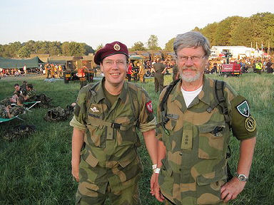 | 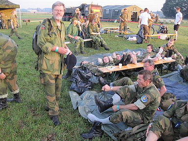 |
48 435 deelnemers (mans en vrouens, burgerlik en militêr) van 66 lande het aan die 2010 mars deelgeneem. Die jongste deelnemer was slegs 11 jaar oud en die oudste 88 jaar oud. Daar was 'n deelnemer wat vir die 63ste keer deelgeneem het.
Stappers kom uit alle lae van die bevolking en word aangedryf deur die begeerte om te presteer, mense te ontmoet en in 'n gees van vriendskap en vrolikheid, mars-musiek, veel-kleurige vlae, feestelike atmosfeer deel te neem. Stappers word gedra deur die eindelose applous, gasvryheid en entoesiasme van Nijmegen se mense wat in hul honderduisende langs die strate staan. Lewenslange vriendskappe word gesmee.
| 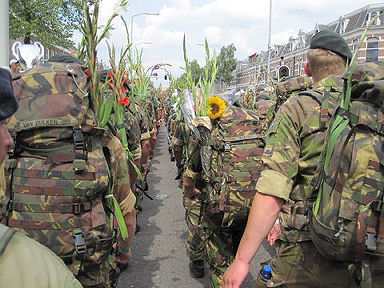 | 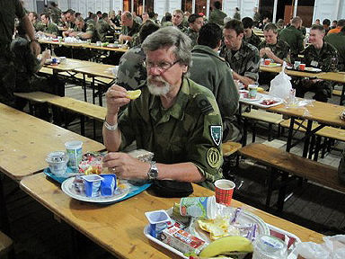 |
Daar word beweer dat die deelnemers ongeveer 7.6 miljoen Euro in Nijmegen spandeer. Almal word in 'n baie groot militêre kamp gehuisves, met ongeveer 1000 mense wat hulle versorg.
Militêre deelnemers moet 'n rugsak wat 10 kg weeg, asook hul eie water saamdra. Hulle kan individueel of as peloton deelneem. Burgerlike deelnemers hoef nie iets saam te dra nie. Weens die hitte wat gedurende Julie ondervind is, het talle deelnemers mediese behandeling moes ondergaan. Aan die einde van die vierde dag marsjeer die deelnemers, soos die Romeine van ouds deur die Triomfboog. Daar word hulle met gladiola (swaardlelie) blomme op die Via Gladiola oorlaai - tradisioneel die simbool van krag en oorwinning wat teruggaan na die Romeinse tyd toe gladiators tot die vermaak van duisende toeskouers met swaarde teen mekaar geveg het.

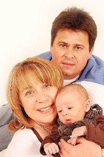
b9.c1.d2.e3.f3.g2.h4 Izak Jacobus Henning *16-7-1970 het vir ons laat weet dat hy en sy vroutjie, Corné (gebore La Grange) op 9 April 2010 die trotse ouers van 'n fris seuntjie geword het. Klein Armand is in Kemptonpark gebore.

Baie dankie aan almal wat reeds 'n bydrae vir hierdie jaar aangestuur het. Ongelukkig moet ons rapporteer dat daar nog meer as 30 lede is wat geen bydrae vir 2010 gelewer het nie en ons uitgawes hierdie jaar was ook baie meer as vorige jare.
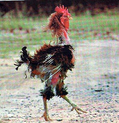
Soos julle kan sien, het ons Haantjie (hierlangsaan) nogal 'n rowwe jaar agter die rug, maar alles inaggenome het ons darem nie te sleg gevaar nie. Soos julle sien het ons darem al ons gevegte gewen. Ingevolge nuwe wetgewing, moet ons nou bewys dat ons nie 'n winsgewende besigheid is nie. Ons wag nou die Staat se goedkeuring af om die Familiebond as 'n Nie-Winsgewende organisasie te laat verklaar. As dit goedgekeur word, sal ons in alle waarskynlikheid minder bankfooie betaal.
Die familiebond is totaal afhanklik van bydraes van sy lede om te oorleef. Saam met hierdie nuusbrief stuur ons reeds die kennisgewings vir 2011 uit. Ons doen dus 'n beroep op alle lede wat nog nie hierdie jaar vir ons iets aangestuur het nie, om dit te onthou, wanneer u u bydraes vir 2011 aanstuur.
Vir die gerief van Ere - en Lewenslange Lede, wat ook graag 'n bydrae wil maak, meld ons die Familiebond se bankbesonderhede: ABSA Bank Villiersdorp (Tak 334-612), Rekening no 2890 610 423, Rekening naam - Henning Familiebond, as u iets direk in ons rekening wil oorplaas. Gebruik asseblief u lidnommer as verwysing.